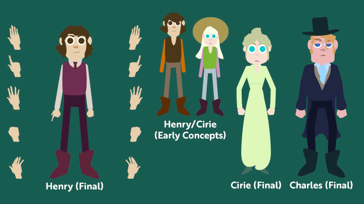

I stayed organized with 100+ lines of dialogue, color-coded tracks, and cue sheets. I filmed rotoscoping scenes four times for each character. Premiere was used for editing footage before animating.
Pre-Production


I wrote two storyboards, one for animation and one for live-action blocking. I created animatics, recorded voices, and mapped out everything in advance.
Style & Design



Production